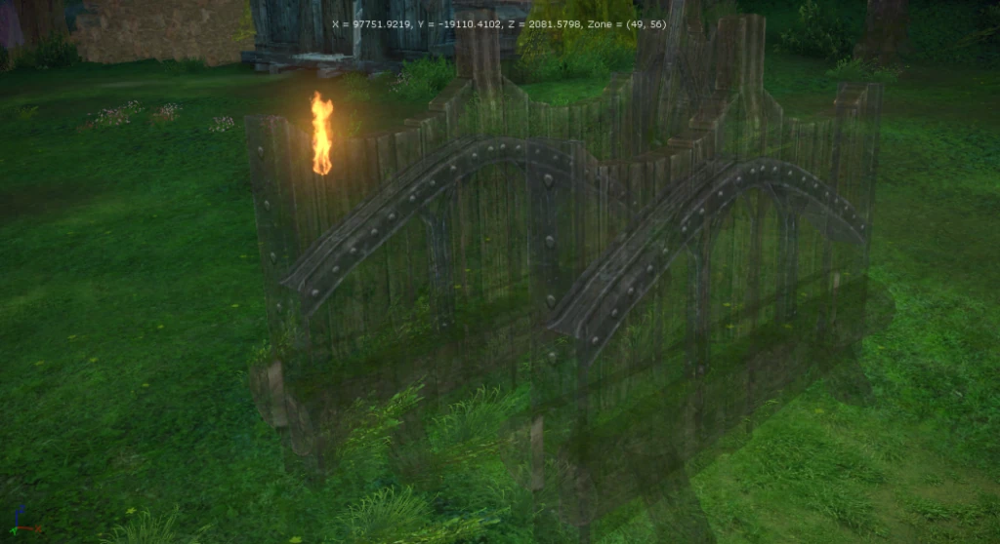
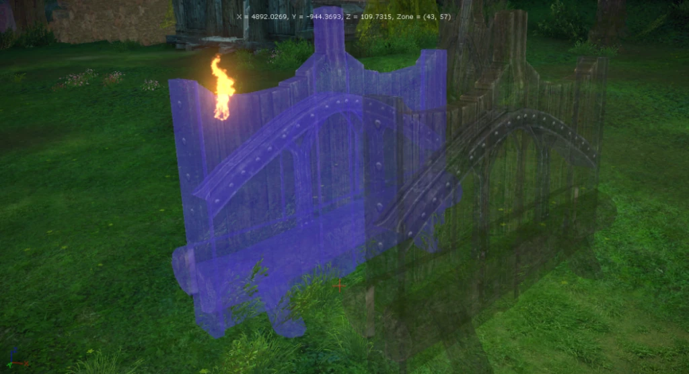

Backface Culled Translucent Shader

In old version UE3, It provided only simple translucent draw method. Its sorting issue is always trouble for rendering the translucent objects.
For this reason, I added two functions in UE3. First is CulledTranslucent of which mesh’s backface is culled. It is useful to represent the hide effect such as rogue’s skill.
Second is CulledTranslucentForBackgroundObject (CTFBO) which is culled by each translucent object with this option. It is useful to secure the Tanker’s view while they’re tanking in MMORPG.
I inserted these as check buttons in material editor for artists
below things are comparison images of translucent objects.



<Normal Translucent>


<Culled Translucent>


<Culled Translucent For Backgoround Object>
Releated